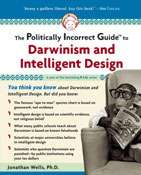

Íconos de la Evolución Preguntas frecuentes

| Otros enlaces: Los enlaces externos en este documento se abren en nuevas ventanas.
|
El creacionista Jonathan Wells, un defensor del diseño inteligente afiliado al Instituto de Descubrimiento, ha escrito un libro titulado Íconos de la Evolución, en el que afirma que algunas de las mejores evidencias conocidas de la evolución —como las polillas carboneras, el experimento de abiogénesis de Miller-Urey y los pinzones de las islas Galápagos— son falsas, fraudulentas o mal representadas en los libros de texto de nivel universitario. Los artículos encontrados aquí refutan el libro de Wells y demuestran que las interpretaciones tradicionales, que apoyan la ciencia mainstream, de estos "íconos" son correctas.
- Icono de la Obscuridad
-
El largo y exhaustivo artículo de Nick Matzke enumera los "iconos" de Wells y refuta
sus afirmaciones una por una, demostrando cómo en cada caso es Wells quien ha
promovido interpretaciones engañosas de estas famosas evidencias de la evolución.
- Jonathan Wells y los pinzones de Darwin
-
Este artículo examina con mayor detalle uno de los "iconos" de Wells -- las especies de pinzones de
la isla de Galápagos -- mostrando cómo las afirmaciones de Wells sobre ellos
no resisten el escrutinio.
- Wells y los embriones de Haeckel
-
Un biólogo revisa en detalle el "icono" de la embriología y muestra que,
contrario a lo que afirma Wells, los embriones son evidencia de la evolución.
- Iconos de la Evolución Humana
-
Una revisión del capítulo "From Ape to Human: The Ultimate Icon" de
Iconos. Es parte de la sección de Hominidos Fósiles
de este Archivo.
- Audiencias sobre la Evolución en Kansas: Declaración de Jonathan Wells
- Una transcripción de la declaración presentada por Wells en las supuestas "audiencias científicas" de mayo de 2005.

En 2006, Wells publicó un nuevo libro titulado La Guía Políticamente Incorrecta sobre el Darwinismo y el Diseño Inteligente. El Panda's Thumb tiene reseñas detalladas de este libro que contiene errores fácticos:
-
Reseña de La Guía Políticamente Incorrecta sobre el Darwinismo y el Diseño Inteligente
- Introducción
- ¿Por qué las palabras deben tener significados? (Capítulo 1)
- Embriología simplemente incorrecta (Capítulo 3)
- El secreto son las mentiras (Capítulo 9)
- "El cristianismo tradicional", revolucionarios de sustitución y la guerra cultural (Capítulo 15)
- ¿De quién es la cabeza fea? Jonathan Wells y el lisenkismo (Capítulo 16)
- PIG ignorante sobre Ohio